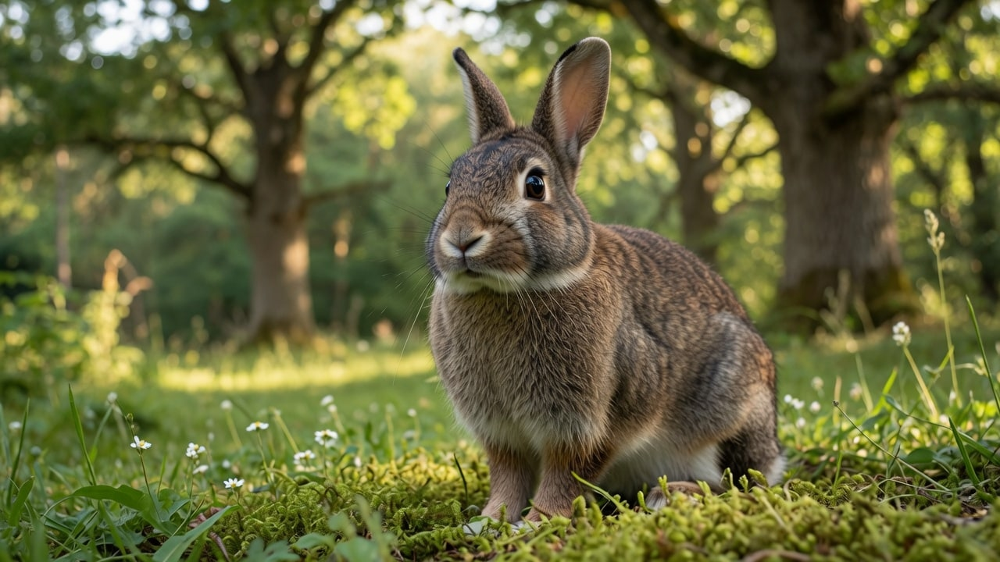

Rabbit · Oryctolagus cuniculus
A complete, fact-checked printable manual: the space standard the pet-store hutch misses, unlimited hay and why it is the whole diet, GI stasis triage, and the routines that carry a rabbit through 8 to 12 years.

Contents
Every page is written to be used, not just read once.
Getting Started
Section 01 · Quick Profile
Section 02 · Full Care Guide
Section 03 · Health & Common Issues
Section 04 · Quick Reference
Section 05 · Owner Tools
Reference
Start here
Three ways to get value from it, depending on where you are right now.
Read pages 4 through 9 in order before buying anything. Two decisions here are expensive to reverse: the space you commit to, and whether you get one rabbit or a bonded pair. Both are covered on pages 5 and 9, and both have research behind them. Then use the Budget & Shopping List on page 16, and budget the spay or neuter separately, because it is the line item people most often forget.
Jump to the Setup Checklist and Diet Targets on page 14 to audit what you have, and page 10 if anything seems off. If your rabbit has not eaten or produced droppings for 8 hours or more, stop reading and call a rabbit-savvy vet today. Page 11 explains why that number is so much shorter than it is for other pets.
Why this package exists
Rabbit welfare standards have shifted a long way from the wire hutch, and most of what is still sold for rabbits reflects the old picture. This package uses current House Rabbit Society space guidance and the peer-reviewed companionship and run-access research on pages 5 and 9, cross-checked against veterinary sources rather than packaging.
Find the vet before you need one
Rabbits need a rabbit-savvy exotic vet, not a standard small-animal clinic. A vet unfamiliar with rabbit physiology can genuinely miss or mishandle the conditions in Section 03. Find one now, through a rabbit rescue or the House Rabbit Society, and write the number on page 15.
Section 01
Everything at a glance before you read the detail.
| Scientific name | Oryctolagus cuniculus, the domestic rabbit |
| Adult size | Highly variable by breed, 2.5 to 20+ lbs. Over 300 breeds recognized |
| Captive lifespan | 7 to 10 years indoors, some past 12. Outdoor rabbits average closer to 2 |
| Native range | Iberian Peninsula originally; grassland, meadow, and forest edge |
| Diet type | Hindgut-fermenting herbivore. Grass hay is 80 to 85% of the diet |
| Space minimum | 8 sq ft enclosure plus 24 sq ft exercise space, 5+ hours a day |
| Social needs | Highly social. A neutered, bonded pair is the evidence-backed default |
| Handling difficulty | Beginner to intermediate; physically fragile, and most prefer not to be lifted |
| Desexing | Strongly recommended. Up to 80% of unspayed does aged 5+ develop uterine cancer |
$150 to $600 for an exercise pen, litter box, dishes, hay feeder, nail clippers, carrier, and bunny-proofing. Spay or neuter is separate at $150 to $500+.
$60 to $100 for hay, pellets, fresh vegetables, and litter. Annual total lands around $500 to $800 after the first year, which runs $1,000 to $1,500.
Keep a real emergency fund
A GI stasis workup alone can exceed $1,500, and rabbits hide illness well, so when something goes wrong it tends to go wrong fast. Keep $500 to $1,000 set aside separately from the routine budget.
Section 02 · Full Care Guide
If you have seen a small wire hutch marketed as a rabbit cage, it is worth knowing plainly: current welfare standards consider that size inadequate. The House Rabbit Society recommends at least 8 square feet of enclosure combined with at least 24 square feet of exercise space for one to two rabbits, with a minimum of 5 hours a day to run and play. In practice that means a large foldable metal exercise pen, 4 ft by 4 ft or bigger, is the realistic standard, not a small cage a rabbit is occasionally let out of.
Space shows up in the bloodwork, not just the behavior
A study of pair-housed pet rabbits found that run access, hutch size, and time of day all affected welfare-relevant behavior and fecal corticosterone. Space is not a nicety here, it registers in a stress hormone metabolite.
The lifespan gap above is the whole argument. Outdoor rabbits face predators, extreme weather, and health problems that go unnoticed without daily close contact, and flystrike (page 12) is overwhelmingly an outdoor risk. If you are deciding where a rabbit will live, indoors is the option that actually protects it.
Section 02 · Full Care Guide
Skip wire flooring entirely. It contributes directly to sore hocks (page 13), which is a painful, slow-healing condition and a fully preventable one. Vinyl or linoleum over plywood, washable rugs, or fleece all give better traction and are easier on a rabbit's feet. A waterproof tarp under the whole setup protects your actual floor from the inevitable accidents.
Rabbits tend to eliminate while they eat, so the trick is putting hay directly in or right over the litter box. That alone does most of the training work, because you are routing an existing behavior rather than teaching a new one. Use a large cat-litter-box-style container, not the small corner boxes marketed specifically for rabbits, and fill it with paper-based or compressed wood-pellet litter.
Never use
Clumping cat litter, which causes serious problems if ingested, or pine and cedar shavings, which release aromatic oils that irritate a rabbit's respiratory system. Both are still sold near the rabbit supplies.
If litter training isn't working
Spaying or neutering meaningfully improves litter habits, and an intact rabbit marking territory is the most common reason training stalls. If you are fighting the litter box with an intact rabbit, that is usually the underlying reason rather than a training failure.
Rabbits tolerate cold far better than heat, and heat stress is a real risk above roughly 80°F. Keep them out of direct afternoon sun, provide shade and airflow, and never use a solid-walled enclosure where ammonia from urine can build up. If a room is comfortable for you in a jumper, it is comfortable for a rabbit.
Section 02 · Full Care Guide
Rabbits are more physically fragile than most first-time owners expect. They have delicate spines and powerful hind legs, and that combination means an unsupported or panicked rabbit can genuinely injure itself trying to escape your grip. Getting this right matters more here than with almost any other common pet.
Why support is the whole thing
A rabbit struggling against an unsupported hold can fracture its own lumbar spine. The strength of the hind legs works against it in exactly the wrong way when the body is not fully supported. This is not a handling preference, it is the single most important thing to get right with this species.
Support the chest with one hand, positioned just behind the front legs, and the hindquarters with the other, simultaneously. Lift with both regions supported at once, hold the rabbit close against your body rather than out at arm's length, and keep sessions low to the ground. If the rabbit struggles, lower it back down immediately rather than trying to maintain your grip. Never lift a rabbit by the ears, and never rely on the scruff alone to carry its weight.
The "football hold" that vets use is worth learning: tuck the rabbit's head into the crook of your elbow with its body supported along your forearm. It is a genuinely low-stress way to carry a rabbit securely.
Skip trancing
You may see advice about flipping a rabbit onto its back to calm it. Don't. Research measuring rabbits in that position found significant increases in respiration, heart rate, and stress hormone levels. The stillness is closer to freezing in fear than to relaxing, which is exactly why the myth lasted so long: it looks calm from the outside.
Most rabbits are calmest with all four feet on the ground, and many never come to enjoy being picked up even once they fully trust you. That is normal, and it is not a failure. Build trust at floor level instead: sit or lie down at the rabbit's height, hand-feed greens, and let the rabbit choose to approach rather than reaching in to grab it. Over time that earns you a rabbit that is relaxed around you even if actual pick-ups stay rare.
Thumping a hind foot, a tense rigid body, wide eyes, fast shallow breathing, teeth grinding (a pain signal here, not contentment), freezing in place, or bolting and kicking. Set the rabbit down in one smooth motion, in a straight line rather than dropping it, and give it space. When freezing or constant hiding becomes a rabbit's normal state rather than a reaction to being handled, that is a longer-running problem worth addressing at the housing level.
Section 02 · Full Care Guide
Unlimited grass hay is the foundation at every adult stage, available around the clock. It is not filler: it keeps the gut moving and wears down teeth that grow continuously for the rabbit's whole life. Pellets are the smallest part of the diet, not the base.
| Life stage | Hay | Pellets & fresh food |
|---|---|---|
| Juvenile (7 weeks to 7 months) | Unlimited alfalfa | Unlimited alfalfa-based pellets; vegetables added gradually from about 3 months, one item at a time |
| Transition (about 4 to 6 months) | Alfalfa phased out for grass hay | Pellet portions reduced gradually over several weeks |
| Adult (7 months to about 5 years) | Unlimited grass hay, 80 to 85% of the diet | Roughly 1/8 to 1/4 cup high-fiber timothy pellets per 5 to 6 lbs; at least 3 varieties of leafy greens daily |
| Senior (6+ years) | Unlimited grass hay continues | Alfalfa may return if underweight; more individualized, vet-guided feeding |
Sources vary on exact pellet and vegetable amounts, and the honest answer is that they scale with body weight and condition rather than landing on one number. Check yours with a rabbit-savvy vet. Fresh water is available at all times at every stage, by bottle or bowl.
Timothy, orchard, oat, or brome. Alfalfa's extra calcium and calories are for babies, juveniles, pregnant or nursing does, and underweight seniors. Fed to a healthy adult it contributes to obesity and bladder sludge.
A fresh, high-fiber, plain timothy-based pellet. Colorful mixes with seeds, nuts, or dried fruit are linked to obesity and dental disease, because a rabbit eats the sweet parts and leaves the fiber.
Leafy greens make up the bulk of the fresh portion: romaine, cilantro, parsley, basil, arugula, bok choy, carrot tops. Offer at least three varieties daily and introduce new items one at a time so you can spot soft stool. Non-leafy vegetables like bell pepper, cucumber, and carrot go in smaller amounts, since they are higher in sugar and starch than their reputation suggests. Fruit is a treat at roughly 1 to 2 tablespoons once or twice a week, not daily, and carrots are a treat too despite the cartoons.
Never feed
Avocado, which can cause respiratory distress and fatal heart failure. Chocolate. Onions, garlic, and chives, which carry hemolytic anemia risk. Rhubarb, high in oxalic acid and linked to kidney damage. Iceberg lettuce is not toxic but is nutritionally near-empty and causes digestive upset in quantity. Skip bread, crackers, cereal, and especially commercial yogurt drops, which are explicitly inappropriate despite being sold as rabbit treats.
Change food slowly, always
A sudden switch of hay, pellet brand, or vegetables can disrupt the cecal bacteria and trigger soft stool or GI stasis. There is no gut-loading or supplement dusting in rabbit care; the closest equivalent is a gradual transition over a week or more.
Section 02 · Full Care Guide
A companion beats everything else you could buy
In privately owned rabbits, solitary animals showed significantly less behavioral diversity and more awake inactivity than socially housed ones. Socially housed rabbits were more active. The same work found a larger age difference between paired rabbits was associated with a lower friendship index, which is a practical steer when choosing a companion.
Close in age. Neuter both first, and bond them properly over weeks rather than putting two rabbits in a room. A single rabbit with an attentive owner is a compromise, not an equivalent.
Stuff it into cardboard tubes, hang it in bundles, put it in the litter tray, scatter greens through it. Hay is the diet, the dental mechanism, and the enrichment all at once.
An elevated platform let group-housed rabbits move up and down, rest more comfortably, and increase exploratory behavior. Somewhere to get on and somewhere to get under, because the choice is the enrichment.
Or free range of a rabbit-proofed room. Permanent beats scheduled: a rabbit let out for an hour a day spends the other 23 confined, and the corticosterone finding is pointing straight at this.
These are burrowing animals. A large container of safe soil, shredded paper, or hay gives digging an outlet, and a rabbit with nowhere to dig will pick somewhere you would rather it did not.
Bamboo chew sticks, untreated willow, plain cardboard. Novel objects come last and are the cheap part.
Section 03 · Health & Common Issues
What to watch for, and what to actually tell the vet.
Same-day vet if you see
No food or droppings for 8 hours or more · a bloated or tense abdomen · visible fly eggs or maggots in the fur · open-mouth breathing or persistent discharge · sudden lethargy or hiding · audible teeth grinding with a hunched posture · droppings that are small, misshapen, or strung together with fur
As a prey species, a rabbit's instinct is to conceal weakness, so by the time something is obvious it is usually well underway. Combine that with a gut that needs near-constant throughput and you get the defining feature of rabbit health: the safe window is measured in hours rather than days. A cat or a dog can comfortably skip a meal. A rabbit that skips one has started a clock.
| Normal | Concerning |
|---|---|
| Soft tooth-purring while being stroked, a contented sound | Harsh, audible teeth grinding, which is a pain signal |
| Eating cecotropes directly, usually overnight | Uneaten cecotropes stuck to the fur or the floor, often a diet or weight problem |
| Loose fur and heavier grooming during a molt | Bald patches, scabs, or fur strung through the droppings |
| Flopping over dramatically on one side to sleep | Lying stretched out and unresponsive, or hunched and pressing the belly down |
Section 03 · Health & Common Issues
8 hours is the number
A rabbit that has not eaten or passed droppings in 8 hours or more needs a same-day visit to a rabbit-savvy vet. Not tomorrow, not after a night of monitoring. GI stasis can turn life-threatening within 24 to 48 hours of onset.
Rabbits are hindgut fermenters, and their digestive system depends on continuous movement to process a high-fiber diet. When gut motility slows or stops, gas builds up, painful bloating follows, and the balance of gut bacteria can shift dangerously. This is not a dramatic injury or an exotic disease, it is the gut simply stopping, and it kills more pet rabbits than almost anything else.
| Trigger | Why it matters |
|---|---|
| Low-fiber diet | Insufficient hay slows motility over time. The single biggest risk factor |
| Stress | A loud environment, a new pet, or a vet visit can be enough |
| Dehydration | Reduces gut lubrication and motility directly |
| Dental pain | Makes eating uncomfortable, and reduced intake alone starts it |
| Pain from any other cause | A rabbit in pain stops eating, which begins the same loop |
| Fur ingested during a heavy molt | Swallowed fur plus dry gut contents can form a hard-to-pass mass |
Reduced or absent fecal output, the earliest and most reliable sign. Smaller, oddly shaped, or fur-strung droppings before a full stop. Picking at food without fully refusing. A hunched posture with the belly pulled in. Harsh, audible teeth grinding, distinct from the soft tooth-purring of a relaxed rabbit.
Do not try pineapple juice or gas drops
Outdated home remedies with no reliable evidence behind them, and relying on them spends the time that matters most. Treatment is veterinary: fluids, pain control, motility medication, and finding the trigger. Syringe-feeding a critical care formula is often part of recovery but should be vet-guided, since force-feeding a rabbit with a genuine blockage can make things worse.
Prevention, and the odds
Unlimited grass hay at 80% or more of the diet is the single most protective habit available, alongside fresh water and a daily glance at the litter box. Roughly 70% of rabbits recover with prompt treatment, and delayed cases can need days of hospitalization.
Section 03 · Health & Common Issues
Cause: rabbit teeth grow continuously, as much as 4 to 5 inches a year, and it is the side-to-side grinding of long-strand fiber that wears them down. A pellet-heavy, hay-light diet does not do that work, so teeth overgrow and molar spurs form against the cheek or tongue. Signs: drooling, dropping food while trying to eat, a preference for softer foods, weight loss, and watery eyes when overgrown roots press on tear ducts. Diagnosis: an oral exam, usually with a scope, since molar spurs sit too far back to see from the front. Response: a sedated trim, often repeated. Prevention: a properly hay-based diet, which is the whole mechanism.
Why dental disease shows up as GI stasis
The two are linked more often than owners expect. Painful teeth mean reduced eating, and reduced eating is exactly what starts stasis. A rabbit having repeat stasis episodes usually needs a dental exam, not just symptomatic treatment for the gut.
Cause: flies lay eggs on soiled or damp fur, most often around the rear end, and the maggots that hatch feed on the rabbit's tissue. Signs: visible eggs that look like small grains of rice, damp or matted fur, a foul smell, and a rabbit that is suddenly lethargic or restless. Speed: it can kill within 24 to 48 hours. Response: an immediate emergency vet visit, not a home clean-up. Risk factors: outdoor housing, hot weather, obesity or mobility problems that stop a rabbit grooming its own rear, dental disease, diarrhea, and urine-soaked fur that is not caught promptly.
The daily check that prevents it
In warm weather, check your rabbit's rear end and underside every single day, and twice a day for any rabbit that is overweight, elderly, or has mobility problems. This is thirty seconds, and it is the difference between a wash and a fatal emergency.
Section 03 · Health & Common Issues
Cause: often Pasteurella multocida, with poor ventilation, ammonia build-up, and dusty bedding as contributing factors. Signs: eye or nasal discharge, sneezing, and crusty matted fur on the front paws from a rabbit wiping its own nose repeatedly. That paw sign is the one owners most often notice first. Response: a vet, since this rarely resolves alone and can become chronic. Prevention: ventilation, clean litter, and no solid-walled enclosures.
Risk: up to 80% of unspayed does aged 5 and older develop uterine cancer, with risk beginning to climb from around age two. That is one of the highest documented cancer rates in any commonly kept pet. Signs: blood in the urine, reduced appetite, lethargy, and sometimes a palpable abdominal mass, but often nothing obvious until it is advanced. Prevention: spaying, ideally well before the risk starts climbing. This is why rabbit-savvy vets treat desexing as close to routine rather than optional, and it is also why a spay costs more than a neuter: it is a more invasive procedure.
The pattern across this whole section
Hay prevents the dental disease that causes the stasis. Desexing prevents the cancer and improves the litter habits. Flooring prevents the sore hocks. Indoor housing prevents most flystrike. Almost everything in Section 03 traces back to a decision made in Section 02.
Section 04 · Quick Reference
| Component | Target |
|---|---|
| Grass hay (adult) | Unlimited, 80 to 85% of the diet |
| Alfalfa hay | Juveniles, pregnant or nursing does, underweight seniors only |
| Pellets (adult) | About 1/8 to 1/4 cup per 5 to 6 lbs of body weight |
| Leafy greens | At least 3 varieties daily, scaled to body weight |
| Non-leafy vegetables | Small amounts, higher in sugar and starch |
| Fruit and treats | 1 to 2 tablespoons, once or twice a week |
| Water | Always available, bottle or bowl |
| Diet changes | Gradual, over a week or more |
Print & post near the enclosure
Call a rabbit-savvy vet today if
No food or droppings for 8+ hours · a bloated or tense abdomen · fly eggs or maggots in the fur · open-mouth breathing or persistent discharge · sudden lethargy or hiding · harsh teeth grinding with a hunched posture · droppings small, misshapen, or fur-strung · head tilt or loss of balance
| Reading | Target |
|---|---|
| No eating or droppings, act by | 8 hours |
| Fasting beyond this risks fatty liver | 24 hours |
| Hay share of the diet | 80 to 85%, unlimited |
| Pellets, adult | 1/8 to 1/4 cup per 5 to 6 lbs daily |
| Enclosure and exercise space | 8 sq ft plus 24 sq ft, 5+ hours a day |
| Heat stress risk above | About 80°F |
| Wellness exams | Twice a year with a rabbit-savvy vet |
| Flystrike checks in warm weather | Daily, twice daily for at-risk rabbits |
Have this ready when you call
When the rabbit last ate and last produced normal droppings, what the droppings looked like, current weight and the trend from your log, spay or neuter status, RHDV2 vaccination status, and anything that changed in the last few days.
My vet
Practice: ______________________ Phone: ______________________
Out of hours: ______________________ Nearest 24hr exotic: ______________________
Section 05 · Owner Tools
| Item | Typical cost |
|---|---|
| Adoption fee (often includes spay/neuter and a vet check) | $25 to $100 |
| Exercise pen (foldable metal x-pen) | $40 to $100 |
| Litter box, large cat-style | $5 to $15 |
| Food and water dishes | $10 to $20 |
| Nail clippers | About $10 |
| Hay feeder, carrier, bunny-proofing supplies | Remainder of the range |
| Total initial supplies | $150 to $600 |
| Spay or neuter, budgeted separately | $150 to $500+ (neuter $200 to $300; low-cost programs from about $139) |
| Hay (monthly) | $20 to $40 |
| Pellets (monthly) | $5 to $15 |
| Fresh vegetables (monthly) | $15 to $50 |
| Litter (monthly) | $15 to $25 |
| Monthly ongoing | $60 to $100 |
| Routine vet visit, twice yearly recommended | $60 to $100 per visit |
| Annual total after year one | $500 to $800 |
| First year, including setup and desexing | $1,000 to $1,500 |
The number that catches people off guard
A GI stasis workup alone can exceed $1,500. Rabbits need an exotic or rabbit-savvy vet, which costs more than a standard clinic, and they hide illness well enough that problems arrive already advanced. Keep $500 to $1,000 as an emergency fund, separate from the monthly budget.
Adopting is usually the cheapest route
A $25 to $100 adoption fee that already includes the spay or neuter plus an initial vet check beats the pet store on total cost by several hundred dollars, before you account for getting an adult rabbit whose temperament you can actually assess.
Section 05 · Owner Tools
Section 05 · Owner Tools
| Symptom | Likely cause | Action |
|---|---|---|
| No eating or droppings for 8+ hours | GI stasis | Same-day vet, do not wait (page 11) |
| Small, misshapen, or fur-strung droppings | Early stasis, or a molt | Vet contact today; brush during molts (page 11) |
| Hunched posture, harsh teeth grinding | Abdominal pain | Same-day vet (page 11) |
| Drooling, dropping food, weight loss | Dental disease or molar spurs | Vet dental exam under scope (page 12) |
| Damp, matted rear fur, rice-like eggs | Flystrike | Emergency vet now (page 12) |
| Sneezing, eye or nose discharge, crusty front paws | Snuffles | Vet, does not clear alone (page 13) |
| Head tilt, loss of balance | E. cuniculi or an ear infection | Vet promptly (page 13) |
| Blood in urine, lethargy, unspayed female | Uterine disease | Vet promptly (page 13) |
| Sore, bald, or scabbed hind feet | Sore hocks | Change flooring; vet if broken skin (page 13) |
| Uneaten cecotropes stuck to fur | Too many pellets, or overweight | Cut pellets, raise hay share (page 8) |
| Panting, lying flat, hot ears | Heat stress | Cool the room gradually, vet if unresponsive (page 6) |
| Thumping, freezing, or constant hiding | Stress or too little space | Review space and handling (pages 5 and 7) |
Section 05 · Owner Tools
Section 05 · Owner Tools
Photocopy this page, or track digitally. Consistency matters more than the format.
| Date | Weight | Droppings | Appetite | Hay eaten | Notes |
|---|---|---|---|---|---|
Why bother logging
Fecal output is the earliest and most reliable warning sign this species gives you, and it only works as a signal if you know what normal looks like for your rabbit. A written baseline turns "that seems like fewer droppings" into something you can actually act on at hour eight rather than hour twenty.
| Date | Reason or vaccine | Next due |
|---|---|---|
| Month | Weight | Body condition notes |
|---|---|---|
Section 05 · Owner Tools
What not to do
Don't keep a rabbit alone and expect toys to close the gap, since the research measured that gap and toys were not what changed it. Don't treat a hutch as housing. Don't schedule exercise for the household's convenience when the animal is crepuscular. Don't pair rabbits without neutering both first. And don't treat digging as a behavior problem.
| Date | Change made | How it went |
|---|---|---|
Reference
| GI stasis | Gastrointestinal stasis: the gut slowing or stopping. The most common life-threatening emergency in pet rabbits. |
| Hindgut fermenter | An animal that digests fiber in the cecum, after the small intestine, which is why constant throughput matters so much. |
| Cecotropes | Soft, nutrient-rich droppings a rabbit produces and eats directly, usually overnight. A normal part of digestion. |
| Bruxism | Teeth grinding. Soft tooth-purring is contentment; harsh, audible grinding is pain. |
| Molar spur | A sharp point on an overgrown back tooth that cuts the cheek or tongue. Not visible from the front of the mouth. |
| Flystrike | Myiasis: fly eggs laid on soiled fur hatching into maggots. Can kill within 24 to 48 hours. |
| Snuffles | Upper respiratory infection, often Pasteurella multocida. |
| Pododermatitis | Sore hocks: pressure sores on the underside of the hind feet, usually from wire flooring or damp bedding. |
| E. cuniculi | Encephalitozoon cuniculi, a parasite that can cause head tilt and recurrent stasis episodes. |
| RHDV2 | Rabbit hemorrhagic disease virus type 2. Fatal, and vaccinated against annually in the US. |
| Crepuscular | Most active at dawn and dusk, which is when a rabbit most wants access to its run. |
| Bonding | The weeks-long process of introducing two neutered rabbits so they live together as a pair. |
Compiled from veterinary and rabbit welfare sources, including House Rabbit Society space guidance and the peer-reviewed companionship, run-access, and platform research cited on pages 5 and 9, and cross-checked against current Beastly Facts guides at time of publication. This package is a husbandry reference, not a substitute for a rabbit-savvy exotic veterinarian, and is not a live website mirror. No external links or website CTAs appear in this document.
© Beastly Facts · Version 1.0 · September 2026